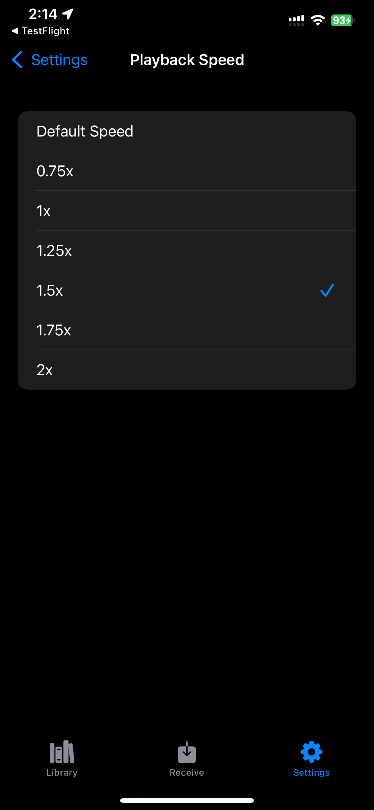
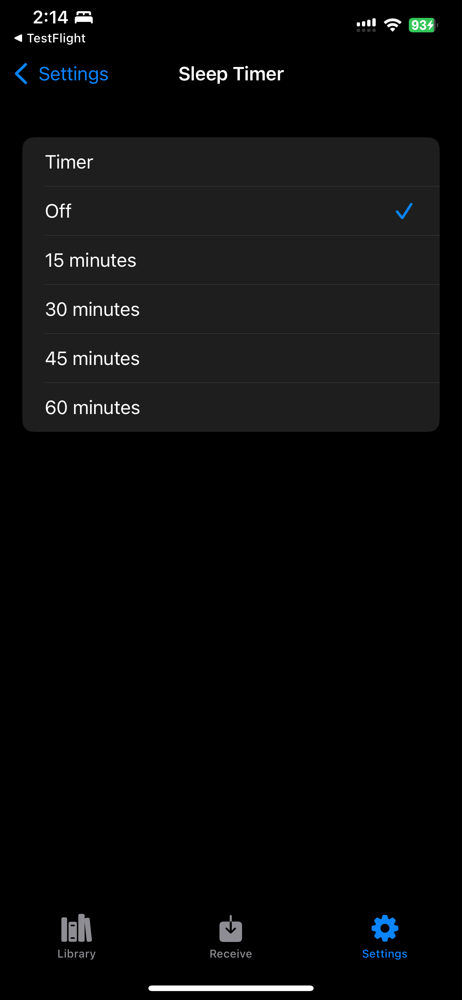
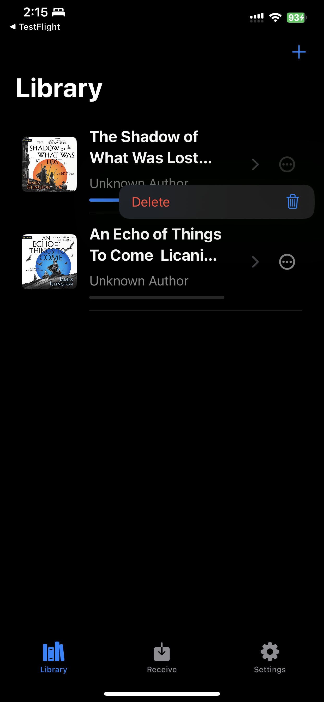

PC uploads without a media server
Start Receive mode, open the local address on your computer, and send audiobook files directly to ShelfDrop while both devices are on the same Wi-Fi network.
iPhone audiobook player
Transfer DRM-free audiobooks from your PC to your iPhone over local Wi-Fi, then listen offline with saved progress, speed control, and sleep timer support.
Start Receive mode, open the local address on your computer, and send audiobook files directly to ShelfDrop while both devices are on the same Wi-Fi network.
Imported books are copied into ShelfDrop storage on your iPhone. Playback progress and listening settings stay with the local app library.
ShelfDrop supports DRM-free audiobook files such as M4B, MP3, M4A, AAC, WAV, FLAC, folders, ZIP imports, and cover images.
Screenshots



Help
Email akugri95@gmail.com with your iPhone model, iOS version, ShelfDrop build, and what happened.